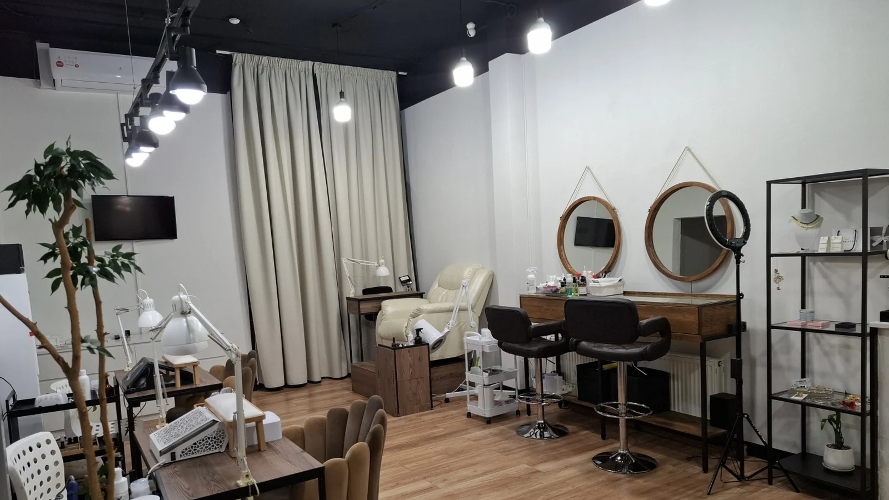
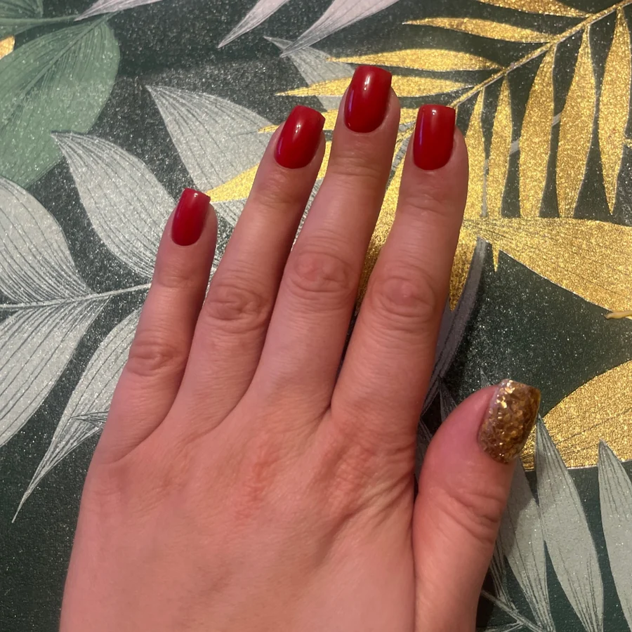
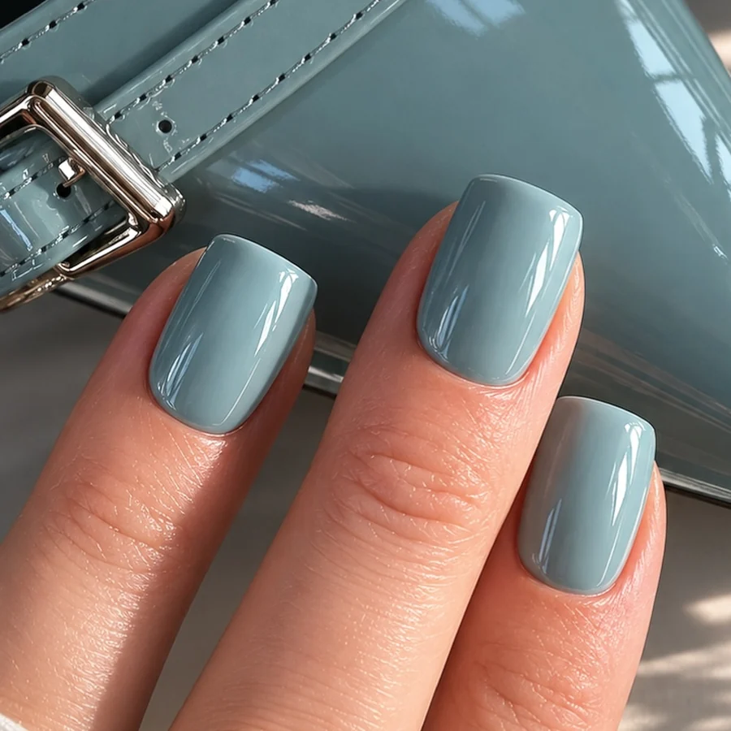
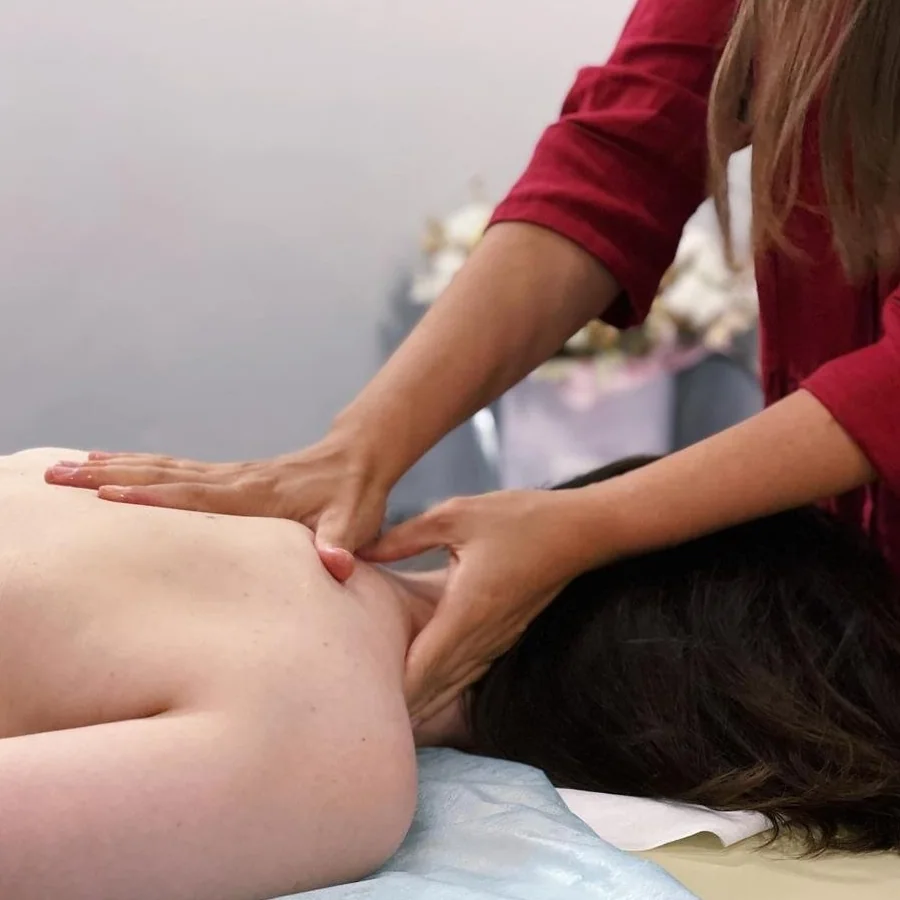

Мастерская красоты · Пермь
Студия красоты, в которую хочется возвращаться
Мастерская «Вдох» в центре Перми, на Тополевом, 5. Ногти, массаж, лазер и спа в одном месте, три категории мастеров. Выберите услугу, день и время, заявка уйдёт в мессенджер студии.
- Рейтинг 5,0 и 80 отзывов
- Маникюр, педикюр, массаж, спа
- Три категории мастеров
- Центр Перми, ежедневно до 20:00

Что входит в маникюр с покрытием
Входит
- Обработка аппаратом и ножницами
- Форма и кутикула
- Укрепление гелем, оно входит в стоимость
- Покрытие гель-лак однотонное
Можно добавить
- Френч, дизайн, роспись
- Японский маникюр
- Массаж или спа в тот же визит
Услуги и цены
Цены с карточки студии, как у топ-мастера. У мастера базовой категории дешевле, у топ-мастера Гульназ дороже.
Маникюр
- Маникюр с покрытием гель-лактоп-мастер, укрепление входит в стоимость2 600 ₽
- Эстетический маникюр без покрытиятоп-мастер1 700 ₽
- Японский маникюртоп-мастер2 000 ₽
- Спа-уход за кожей рук590 ₽
Педикюр
- Полный педикюр с покрытием гель-лактоп-мастер2 900 ₽
- Экспресс педикюр с покрытиемтоп-мастер2 600 ₽
- Эстетический педикюр без покрытиятоп-мастер2 600 ₽
Массаж, спа и эпиляция
- Классический массаж спины30 минут1 400 ₽
- Массаж лица Кобидо1 900 ₽
- Спа Релакс3 900 ₽
- Лазерная эпиляция, три зоныподмышки, глубокое бикини, голени3 200 ₽
- Брови: оформление и окрашивание1 800 ₽
Базовая категория: гель-лак 2 200 ₽, полный педикюр 2 500 ₽. Топ-мастер Гульназ: гель-лак 3 300 ₽, полный педикюр 3 600 ₽. Курсы массажа и полный прайс пришлём в мессенджере.
Как проходит запись
- 01
Выбираете услугу и время
На этой странице: услуга, день и время. Заявка уйдёт в мессенджер студии.
- 02
Студия подтверждает запись
Работают ежедневно с 10:00 до 20:00, по предварительной записи.
- 03
Приходите на Тополевый, 5
Первый этаж, четыре минуты от ЦУМа, рядом бесплатная парковка на 70 мест.
- 04
Мастер делает ногти
Форма, кутикула, укрепление и покрытие. Цвет выбираете на месте.
- 05
Чай или кофе после
В студии наливают чай и кофе с конфетами, можно никуда не спешить.



Что обещаем
Цены как в прайсе
Одна цена на карточке и на сайте. Укрепление в маникюре с покрытием уже включено.
Три категории мастеров
Базовая, топ-мастер и топ-мастер Гульназ: уровень и цену выбираете сами.
Запись без звонка
Заявка уходит в мессенджер, студия отвечает в рабочие часы.
Центр и парковка
Тополевый переулок, 5, первый этаж. Бесплатная парковка на 70 мест.
Отзывы в 2ГИС
«Делала френч, получилось невероятно нежно и аккуратно! Тонкая улыбка, красивое исполнение, всё выглядит очень эстетично. Именно тот случай, когда маникюр не бросается в глаза, но выглядит дорого и утончённо. Осталась очень довольна результатом!»
Ульяна Рогожникова · 20 ноября 2026
«Давно собиралась записаться на педикюр и очень рада, что выбрала именно это место. Всё получилось красиво и аккуратно, ножки теперь просто загляденье. Отдельное спасибо мастеру за бережное отношение и лёгкое общение. Ушла с приятным настроением и ощущением, что наконец-то уделила время себе»
Айлина Алиметова · 26 ноября 2026
«Самый самый лучший массаж в городе ❤️ И ещё качественный маникюр Всегда окружают заботой и не хочется уходить из этого места Рекомендую всем!»
Алина Г · 11 мая 2025
Отзывы с карточки мастерской в 2ГИС, без правок.
Частые вопросы
Как записаться?
Выберите услугу, день и время на этой странице: откроется чат студии, текст заявки скопируется, его останется отправить. Или позвоните, номер внизу.
Сколько стоит маникюр с покрытием?
У топ-мастера 2 600 ₽, у мастера базовой категории 2 200 ₽, у топ-мастера Гульназ 3 300 ₽. Укрепление входит в стоимость.
Кто делает ногти?
В студии три категории мастеров. В отзывах гости хвалят Полину: она делает маникюр, педикюр и массаж лица.
Можно прийти только на массаж?
Да. В мастерской есть массаж, спа-программы, лазерная эпиляция, брови и ресницы. Прайс на них пришлём в мессенджере.
Есть ли парковка?
Да, бесплатная на 70 мест. Вход с Тополевого переулка, первый этаж.
Запишитесь в мастерскую «Вдох»
- Адрес
- Тополевый переулок, 5, 1 этаж, Пермь
- Часы
- ежедневно 10:00-20:00, по записи
- Телефон
- +7 999 125-82-70